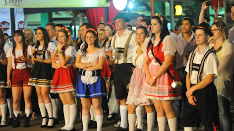
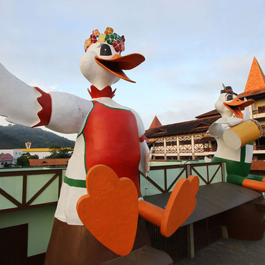
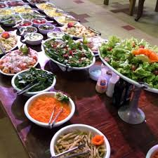

Dança

Vilão - É uma das danças que faz parte do folclore de Santa Catarina.
Trajes
Trajes mais usadas na festa do Fenarreco e de frida no cabelo usa tiara floridas, blusa pode ser de manga comprida ou curta e não deve deixa a barriga a mostra, cores são opcionais, avental, meias e polainas o vestido pode ser longo ou a altura do joelho o sapato deve ser fechado agora para fritz o chapéu e opcional, uma camisa de manga curta ou longa, bermuda deve esta acima do joelho com suspensório da mesma cor, meias brancas e sapatos marrons ou preto.
História
Sr. e Sra. Marreco dando boas vindas.
Festa Nacional do Marreco, nasceu em 1985, inspirada na criação da Oktoberfest, de Blumenau, para atender aos inúmeros turistas que chegavam à cidade à procura da carne de pato.
A primeira edição da festa foi em 1986 e deu tão certo que nesta mesma edição precisou ser reprogramada, pois os visitantes não queriam ir embora depois do jantar. A Fenarreco é a maior festa de Brusque e uma das maiores festas de outubro de Santa Catarina.
Comidas
A escolha pela iguaria é garantia de muito sabor.
Principais atrativos são os pratos à base de marreco, como por exemplo, marreco com repolho roxo (entre mitrotkohl), além do chopp gelado. Além do marreco, há também o eisbein (joelho de porco), frango alemão, filé à brasileira, salsichas especiais, schalatplatte (bisteca suína, joelho de porco e salsicha vermelha), risoto de marreco e também um delicioso buffet. O almoço é servido após abertura dos portões. O biergarten abre diariamente, a partir das 20h, com serviço de petiscos e cervejas importadas.